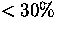
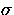
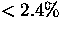
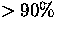
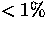
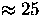
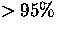
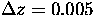

Science Requirements of the Sloan Digital Sky Survey: Current Status
Michael A. Strauss, Princeton University
- 1.1 arcsec imaging in 0.8 arcsec seeing; variation across the
focal plane of . Survey quality imaging data is < 1.2''.
We are rarely meeting these specs. The site does not deliver as good seeing
as we had hoped, there are thermal problems with the telescope, and there
may be errors in the optical figure. We are currently planning to
back off to 1.5'' for definition of survey quality imaging data. We
are diagnosing the problems with improvements in and better monitoring
of the thermal environment of the telescope, with Hartmann data, and with
profilometry of secondary and common corrector. We are also working
on the determination of what fraction of an imaging run not meet specs
before we mark the run to be redone.
Image quality appears to be as good off the Equator as on
the Equator.
- Telescope and imaging camera throughput.
We are meeting specifications in all but a few z' chips:
| Passband |
Minimum e- |
Measured e- |
| u' |
1300 |
1771-1938 |
| g' |
9000 |
10128-10922 |
| r' |
9000 |
9171-9977 |
| i' |
6500 |
6775-7981 |
| z' |
1500 |
1281-1531 |
- Signal-to-noise ratio.
Our nominal 5  limits are 22.3, 23.1, 22.8, 22.3, and 20.8
in u'g'r'i'z', respectively. These are close to specs in all cases
(despite poorer seeing than the specifications assumed),
but this needs to be confirmed with comparisons of repeat observations.
We have an end-to-end requirement of 2% rms calibration accuracy in
r', 2% in g'-r', r'-i', and 3% in u'-g', i'-z'.
We have not yet demonstrated that we are meeting these
specifications.
We have broken this down in an 11-term error budget. Some of the
important items include:
- Primary standard star system defined to an accuracy of 0.006
mag. We're meeting this.
- Errors in transferring between 40'' and PT < 0.006 mag.
More work is needed to check this.
- Errors due to correction for nonlinearity in the PT < 0.006
mag. We're meeting this.
- Determination of the zeropoint on any given night should be
accurate to 0.006 mag. We're meeting this. A solution is
determined once every three hours; we need to determine whether
extinction varies significantly on shorter timescales.
- Flat-fielding of PT patches accurate to 0.006 mag. We are
not meeting this by a factor of 2-3. We have problems with both
flat-fielding and fringing in i' and z'.
- Color transformations between PT and 2.5m should not introduce
errors < 0.006 mag. We have recently discovered substantial
differences between the filter response curves of the two telescopes,
and are still grappling with the problem of how to deal with this.
- Systematic aperture correction effects < 0.006 mag. We
have recently found disturbing systematic effects with seeing, for which
we think we have a solution.
- Time variation of zeropoints along a stripe < 0.006 mag.
We are seeing much larger effects than this.
- Repeat observations of a given area of sky should give a scatter
of  at the bright end. We do meet this, if (and it is a
big `if') we allow
ourselves an overall zeropoint shift. Further tests are underway.
RMS astrometric errors per coordinate should be < 180 mas,
both absolute, and relative between bands.
This is not a concern. For Equatorial scans, we have seen results
as good as 60 mas per coordinate. For off-Equatorial scans, we find
100-140 mas per coordinate (both determined by scanning over regions
of sky with extensive astrometric data available). Much structure is
seen in the residual plots, due to anomalous atmospheric
refraction. The relative astrometry between bands is 20-35 mas per
coordinate.
Some of the requirements may need rewording.
Galaxies:
- 1.
- Surface Density of Galaxies: The mean surface density
of galaxy and BRG targets, averaged over a (not necessarily
contiguous) region of 15 square degrees or larger, will be in the
range 95-105 per square degree.
We are currently meeting this. This will have to be revisited
after photometric calibration is finalized.
- 2.
- Redshift Success of Galaxies: At least 95% of galaxy targets (main sample) will yield
a measurable, reproducible redshift, and will indeed be determined to be
a galaxy (and not a star at z = 0) under standard spectroscopic
observing conditions. In repeated spectroscopic measurements of
the same objects spanning the range of acceptable survey spectroscopy
conditions, no more than 1% of the targets will yield a
redshift one time and not another.
We are clearly close to meeting this requirement, and are trying to
quantify how this translates to S/N requirements on the spectra. It is
unlikely that this requirement will be the driver for spectral S/N.
We have not yet quantified the reproducibility question.
- 3.
- Completeness of Galaxy Target Selection: In regions of
the sky that are not masked (due to bright stars, etc.),
95% of galaxies whose true magnitude and surface brightness are both at
least 0.2 mag (mag/arcsec2 for surface brightness) above the selection
thresholds will be selected.
No more than 5% of galaxies whose true magnitude and surface brightness
are both at least 0.2 mag below the selection thresholds will be selected.
In between these limits, the dependence of selection probability on
true magnitude and surface brightness will be reasonably
smooth.
This requirement has not been tested, as it requires a sample of
ground truth. However, we have tested this at the bright end against
the Zwicky galaxy catalog and the JPG visual sample, and things look
good; further tests with the latest version of PHOTO are needed. We
anticipate things will be better at the faint end.
- 4.
- Reproducibility of Galaxy Target Selection over Range
of Observing Conditions:
Consider two photometric scans covering a given
15 square degree region spanning
the range of acceptable survey imaging conditions; galaxy target
selection run on the two sets of data should give the same number of
targets within TBD %.
The TBD above is probably of the order of 98%. We have the data
in hand to carry out this test, but have not done so yet.
- 5.
- Uniformity of Galaxy Target Selection: Patches of size
15 square degrees at different Galactic and survey latitude
and longitude will yield surface densities of
galaxy spectroscopic targets that are the same to within 10%.
We have data in hand to check this. It has been done
qualitatively but not quantitatively. We don't anticipate a problem
here.
Bright Red Galaxies (BRGs):
The BRG sample attempts to create a volume-limited sample of luminous
red galaxies with 0.2 < z < 0.45. It was an oversight on our part
not to write down formal requirements on the sample itself, but we are
finding to our delight that the vast majority of these objects indeed
lie in this redshift range, and the sample is approximated as
volume-limited.
- 6.
- Redshift Success of BRGs: At least 85% of BRG targets in the main sample will yield
a measured, reproducible redshift under standard spectroscopic
observing conditions. In repeated spectroscopic measurements of
the same objects spanning the range of acceptable survey spectroscopy
conditions, no more than 5% of the BRG targets will yield a
redshift one time and not another.
This is probably the driver to determine the limits for
spectroscopic S/N. The indications are very positive: with good S/N,
we clearly reach this, and we are trying to find the appropriate
threshold.
- 7.
- Completeness of BRG Target Selection: In regions of
the sky that are not masked (due to bright stars, etc.),
95% of BRGs whose true (absolute magnitude, rest frame color) are (0.2, 0.1)
above the selection thresholds will be selected.
No more than 5% of BRGs whose true (absolute magnitude, rest frame color) are
(0.2,0.1) below the selection thresholds will
be selected. In between these limits, the dependence of selection probability
on true magnitude and surface brightness will be reasonably smooth.
Like its galaxy counterpart above, this requires some ground
truth, and is therefore very difficult to test. This requirement as
worded is incomplete; we also need requirements that BRG targets are
actually luminous and red (i.e., the population we're aiming at.). As
indicated above, we're doing well on that front.
- 8.
- Reproducibility of BRG Target Selection over Range
of Observing Conditions: Consider two photometric scans covering a
15 square degree region spanning
the range of acceptable survey imaging conditions. BRG target
selection run on the two sets of data should give the same number of
targets within TBD %.
This can be checked with data in hand.
Quasars:
- 9.
- Surface Density of Quasars: The mean surface density of quasar candidates
in the cap region averaged over a region of 15 square degrees or
larger,
will be 15 per square degree.
We are meeting this requirement.
- 10.
- Quasar Target Selection Efficiency: At least 65% of
z < 5 quasar targets will be
true quasars (i.e., not stars, or non-AGN galaxies) that yield
a measured, reproducible redshift under standard spectroscopic
observing conditions.
We are close to meeting this, but we are not properly handling cases
in which PHOTO photometry does poorly (e.g., due to poor seeing).
Thus the efficiency varies substantially from one region of sky to
another, but we have ideas on how to improve this.
- 11.
- Redshift Success of Quasars: In repeated spectroscopic measurements of
the same objects spanning the range of acceptable survey spectroscopy
conditions, no more than 4% of the quasar targets will yield a
redshift one time and not another.
This needs to be tested now that the spectroscopic pipeline is
giving  correct redshifts for quasars. There are about 5% of quasars
with very weak lines, which will probably be the limiting effect
here.
- 12.
- Quasar Selection Completeness:
We would ideally like to have an absolute requirement on the
completeness of quasar target selection, but such a requirement would
necessarily be untestable without a spectroscopic survey of
every stellar object over a quite large area. This motivates the
following, weaker requirement. In a region of sky reasonably well
sampled by existing quasar surveys in the literature, the quasar
target selection should successfully select 90% of all known quasars
in the region brighter than i' = 19.
Gordon Richard's comparison with known quasars has consistently been
giving completeness numbers between 85 and 90%.
- 13.
- Reproducibility of Quasar Target Selection over Range
of Observing Conditions: Consider two photometric scans covering a
15 square degree region spanning
the range of acceptable survey imaging conditions. The number of
quasar candidates per unit area should match within TBD%.
We have the data to test this in hand.
-
- Other remaining issues with quasar target selection:
- Photometric calibration. This affects all aspects of things.
- Further flag checking of PHOTO outputs (in pretty good shape).
- Putting in code to go deeper for the Southern survey.
- 14.
- Covering of the Tiling Algorithm: The tiling
algorithm will fail to tile no more than 10-2 of
the selected galaxy and quasar targets.
This can now be tested, now that we've got two-dimensional data to
tile.
- Throughput of spectrographs should be of design.
The peak end-to-end throughput is 18% in the blue and 24% in the
red. This includes losses due to the atmosphere, the telescope, fiber
mis-positioning, absorption by the fibers, and the spectrographs
themselves. This is spectacularly good!
- Requirements on uniformity of throughput, fiber-to-fiber.
These are being met.
- Spectral coverage 3900-9100Å. We are covering
3850-9200Å.
- Wavelength calibration to 0.06Å. We are meeting this.
- Flexure <0.3 pixels in 900s; resolution > 1800.
We are
finding <0.6 pixel in one hour; we meet the requirement on
resolution.
- Cross-talk between fibers .
We're probably OK; we
have demonstrated the ability to extract useful spectra of 19th mag
objects from the wings of 15th mag objects.
- Galaxy redshifts at r'=19.5 should be accurate to 30
km/s.
Repeat spectroscopic observations show a redshift scatter of  km/s at r'=18; BRG's (which are fainter) show a scatter closer
to 100 km/s. This test does not address systematic errors due to the
templates. Emission and absorption line redshifts are in good
agreement, with no systematic offsets.
- Accurate classification of quasars and stars as such.
This
is at the  level. Work is ongoing to flag problematic cases for
visual inspection.
- Quasar redshifts to  (rms).
Repeat observations show a reproducibility of 0.0023.
- Spectrophotometry to 10% accuracy.
This is difficult to test in detail. Spectrophotometry is
currently being done only in a crude way. The broad-band colors
synthesized from the spectra are in good qualitative agreement with
the photometric values.
I do not follow the requirements document closely in this section,
but just make some general comments.
- We are not currently meeting requirements on observing
efficiency, although things are improving rapidly. Spectroscopic
overhead is still 50 minutes per frame; we think we can halve this in
the near term. Much work has been done on the mountain with observing
software to improve imaging and spectroscopic efficiency, to do
on-line QA (especially on spectroscopy), and to switch quickly between
the two observing modes.
- We have demonstrated the ability to completely reduce and
calibrate imaging data, run target selection, drill plates, and
deliver them to the mountain, in several months. The pipelines are
still not static, making this difficult to do routinely.
Spectroscopic reduction time is very short (fully-reduced data 24
hours after it is taken is not unusual).
- Tools for deciding observing strategy (what will we observe
tonight?) exist, but need further work, especially for imaging. We
have not thought hard enough about planning to make observing most
efficient at the end of the survey.
- Much work is on-going to set criteria for survey-quality data,
and to build tools to make these decisions easily and efficiently.
Michael Strauss
7/4/2000